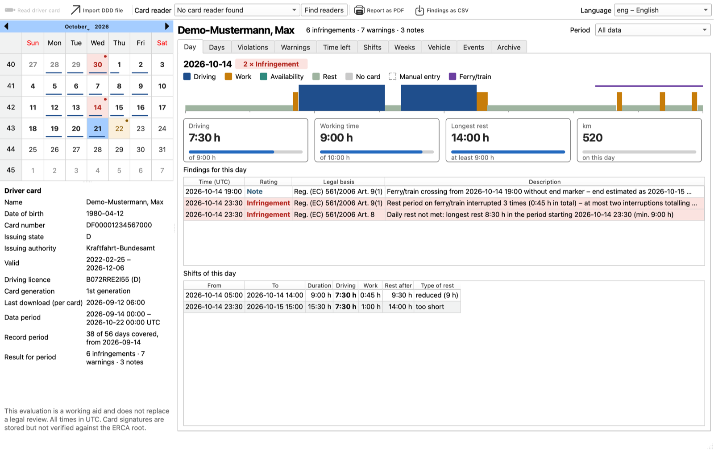
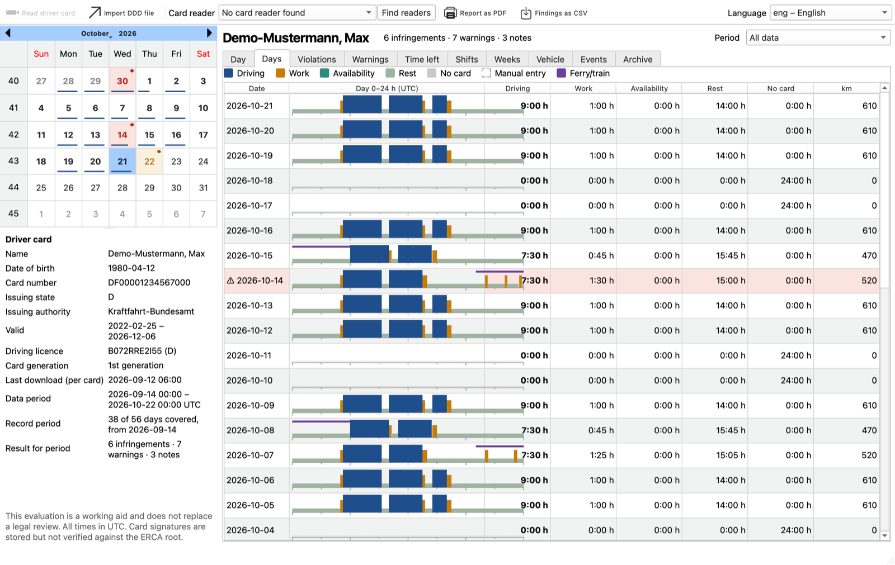
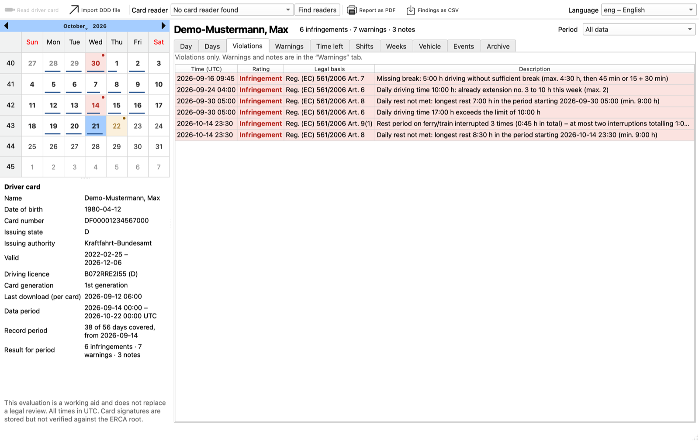
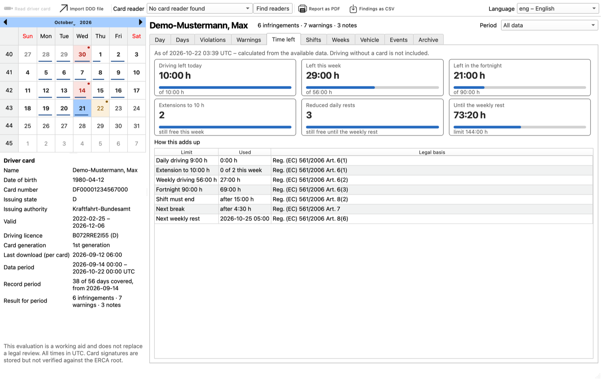
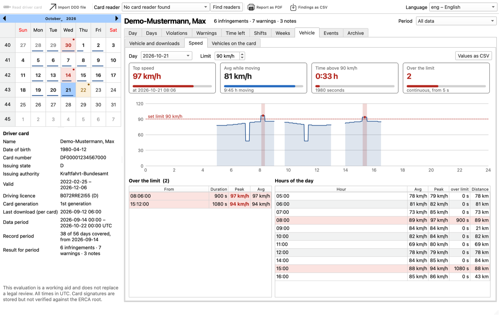
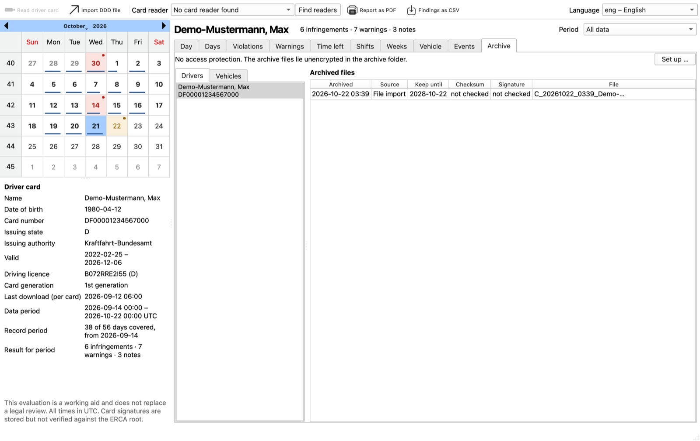

All days at a glance
Every day with its activity chart and totals. Days with an infringement are highlighted; the calendar on the left marks them too and shows driving time as a bar under each date.
A Linux desktop application to read, archive and evaluate digital tachograph driver cards (generation 1 and 2). It checks driving and rest times against EU rules, keeps the signed original files tamper-evident, and never sends data anywhere.

Signed download of the driver card through any PC/SC card reader, or import existing .DDD, .C1B and .TGD files.
Original files stay unchanged and read-only, with SHA-256 checksums, duplicate detection and an archive integrity check. Optional AES-256-GCM encryption with password and recovery key.
Evaluation under Reg. (EC) 561/2006 as amended by (EU) 2020/1054, Reg. (EU) 165/2014 and 581/2010, optionally the German Working Hours Act (ArbZG § 21a).
The Time left tab forecasts remaining driving time for today, the week and the fortnight, plus free extensions and reduced rests.
Archive vehicle unit downloads (.DDD, .V1B, .V2B) and analyse recorded speed with limit violations and hourly values.
Card signatures are checked against the ERCA root key for both card generations.
PDF report (complete or violations only, in any of the languages) and CSV export.
Interface in 30 languages including Arabic and Urdu (right-to-left). No network access – driver data never leaves the computer.

Every day with its activity chart and totals. Days with an infringement are highlighted; the calendar on the left marks them too and shows driving time as a bar under each date.

Each infringement names the article it breaks and explains why – for example a missing break after 4.5 hours of driving or a daily rest that was too short.

How much driving is still allowed today, this week and in the fortnight, when the shift must end and when the next weekly rest is due – with the derivation and the legal reference.

Per-second speed from the mass memory as a daily chart, sections above a limit you set, hourly averages and peaks, exportable as CSV.

Every download is kept with source, retention date, checksum and signature status. Multiple downloads of the same driver are merged automatically.
The links below always point to the latest release.
| Package | For | Install |
|---|---|---|
| tachoarchiv_all.deb | Debian 13 (Trixie) or newer, Ubuntu 25.04 or newer | sudo apt install ./tachoarchiv_all.deb |
| TachoArchiv.flatpak | Any distribution with Flatpak, including older Debian and Ubuntu | flatpak install --user TachoArchiv.flatpak |
| tachoarchiv-linux.tar.gz | Any distribution (apt, dnf, pacman, zypper, apk); fetches missing dependencies | tar xf tachoarchiv-linux.tar.gz cd tachoarchiv-*/ && ./install.sh --user |
All releases and release notes
pcscd service must be running
(sudo apt install pcscd on Debian and Ubuntu). Without a reader you can still import files or
try the program with the built-in demo data (Load demo data).
The evaluation supports checks but does not replace a legal review. All times are shown in UTC.
The full user manual is in German: doc/bedienungsanleitung.md. It is also available inside the program under Help.
Free software under the GNU GPL v3 or later.